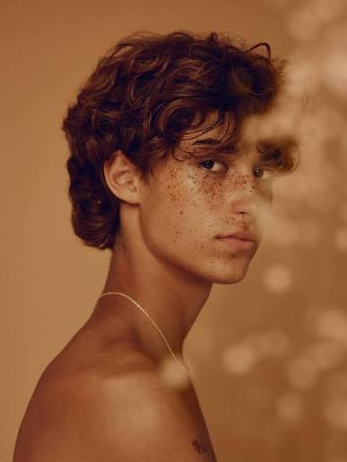
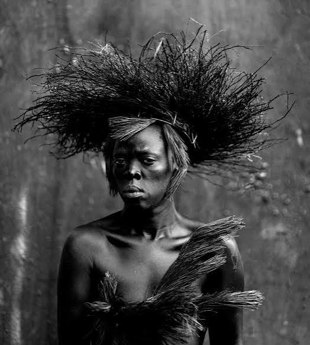
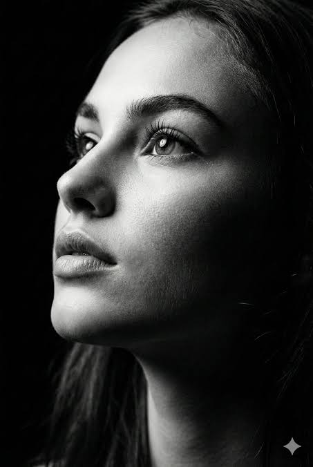

A close-up portrait of a woman with her eyes closed, head slightly bowed, wearing a dark headwrap and a patterned top against a plain grey backdrop.

A young man in profile with curly brown hair and freckles, bare-shouldered with a thin silver chain, in warm amber light and soft foliage bokeh

A black-and-white portrait of a person in a large spiky fibre headdress and matching chest piece, gazing steadily at the camera against a textured grey backdrop.

A black-and-white close-up of a woman in three-quarter profile, face lifted and eyes looking away, lit from the side against deep black shadow.